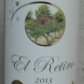

El Retiro
 Este ensamble de Cabernet Sauvignon y Merlot logra una gran complejidad sensorial mostrando aromas de grosella negra y violetas, destacando notas de madera especiada. En boca nos regala una textura aterciopelada que refleja taninos bien estructurados y un final prolongado. Maridaje: Quesos cremosos o maduros, carnes marmoleadas, cordero en salsa de echalote.